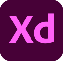

시작은 시작일뿐,
하지만 좌절하지는 않아
“ 왜 디자이너를 그만두는거야? ” “ 진로를 바꾸기엔 너무 늦지 않았을까? ” 주변의 많은 걱정에도 불구하고, 웹퍼블리셔에 도전하게 되었습니다 늦었지만 한발자국씩 제 마음을 웹사이트로 표현해보고 싶습니다 웹퍼블리셔에 대한 저의 열정이 이 포트폴리오에 담겨있습니다
PASSIONATE
기술에 열정을 더하여 상상을 현실로 만듭니다.
CHALLENGING
언제나 도전적인 정신으로 전략적으로 웹사이트를 창조합니다.
INQUISITIVE
새로운 시각으로 가치를 더하여 탐구합니다.
TECH STACK
Design디자인
- Photoshop, Illustrator을 이용한 디자인 및 편집 작업이 가능합니다.
- Adobe XD, Figma를 이용한 UX/UI 설계 및 디자인을 제작합니다.


- 
Publishing퍼블리싱
- 웹표준을 준수하여 시멘틱 마크업을 작성하여 검색엔진을 최적화합니다.
- 웹접근성을 높여 모든 사용자가 동등하게 웹사이트를 접근할 수 있게 제작합니다.
- 크로스 브라우징을 고려한 웹사이트를 제작합니다.
- 운영, 유지보수와 개발에 효율적일지 끊임없이 생각하여 제작합니다.
- SCSS를 통한 컴포넌트화되고 유지보수에 최적화된 코딩을 지향합니다.